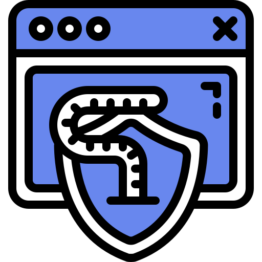
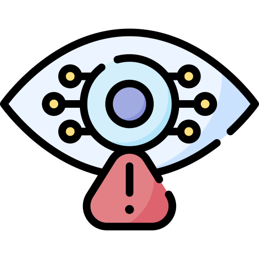

¿Que es un malware?
Empecemos recalcando que la palabra malware es la union de dos palabras en ingles; Malicious Software y en español Software Malicioso. Eso quiere decir que es un tipo de aplicacion que tiene como objetivo hacer daño al dispositivo donde se aloje, un ejemplo podria ser tu celular o tu ordenador personal/corporativo.
Virus Informatico
Su objetivo es alterar el funcionamiento de un dispositivo y para cumplirlo necesita la intervención del usuario, es decir que lo ejecutes una vez que está en tu computadora. Al ejecutarse infecta los ficheros del ordenador, toma el control y se propaga dañando seriamente el dispositivo. Este tipo de malware es totalmente visible y viaja dentro de archivos ejecutables como los .exe de Windows, pero con nombres de otras aplicaciones para engañarte y lograr su cometido.
Gusano
Su objetivo es el mismo del virus informático; sin embargo, actúa diferente ya que no necesita ser ejecutado por el usuario ni modificar ningún archivo para infectar tu computadora. Como el anterior, también se replica a sí mismo para expandirse por las redes a las que está conectado el equipo. Así, el gusano intenta obtener las direcciones de otros ordenadores a través de tus listas de contactos para enviarles copias e infectarlos también. Este tipo de malware es difícil de detectar ya que no afecta el funcionamiento del equipo, lo que si provoca es que algunas tareas simples sean vuelvan muy lentas.
Troyano
Así como el Caballo de Troya de la Odisea de Homero que fue utilizado para engañar a los troyanos, este tipo de malware se disfraza de archivos legítimos para que una vez que lo ejecutes aproveche las vulnerabilidades de tu equipo y empiece a robar tu información sin que te des cuenta. A diferencia del virus o gusano informático no se propaga a sí mismo.
Spyware
Su objetivo es ser el espía que recolecta información del usuario o empresa sin su autorización. Este software malicioso se instala por sí solo o mediante una segunda aplicación, actúan a escondidas tratando de no dejar rastro para que no te des cuenta y sigas actuando con como si nada pasará. Así, el spyware monitoriza y recopila datos sobre las acciones realizadas en un equipo, el contenido del disco duro, las aplicaciones instaladas o del historial de Internet. Además, también puede instalar otras aplicaciones.
Adware
A diferencia de los anteriores este malware no tiene la intensión de dañar tu equipo, sino de invadirte de publicidad. Puede presentarse mientras navegas en internet, en forma de popup (pantalla emergente), durante la ejecución de un programa o sustituyendo la publicidad de una página web. Algunos lo consideran un tipo de spyware porque pueden recolectar y enviar datos personales.
Ransomware
Si eres de los que asegura que su vida entera está en una computadora este podría ser el tipo de malware al que más le temas. Como su nombre lo dice secuestra datos cifrándolos para pedir rescates económicos a cambio de liberarlos. Ingresa al dispositivo a través de los lomos de gusanos informáticos u otros tipos de software malicioso, una vez dentro lo bloquea y muestra en la pantalla un mensaje intimidatorio informando sobre el ataque, la cantidad solicitada para el rescate y el método de pago que puede ser vía SMS, Paypal o bitcoins.